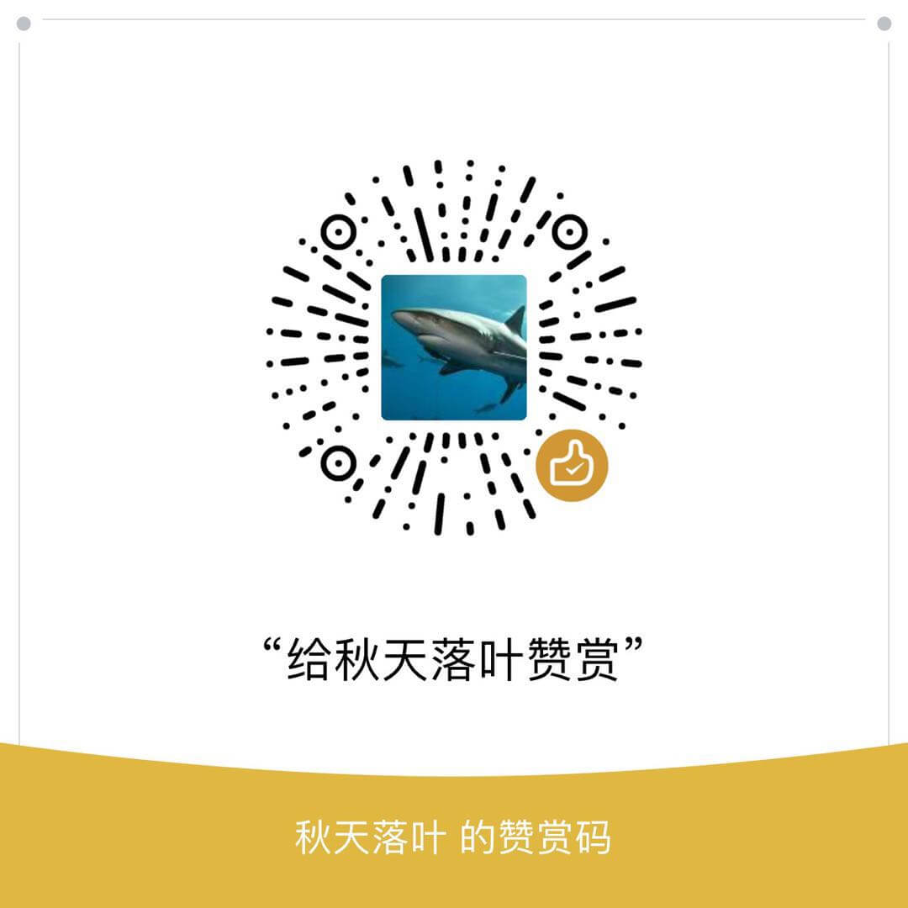

<!DOCTYPE HTML>
<html lang>
<head><meta name="generator" content="Hexo 3.8.0">
    <!--Setting-->
    <meta charset="UTF-8">
    <meta name="viewport" content="width=device-width, user-scalable=no, initial-scale=1.0, maximum-scale=1.0, minimum-scale=1.0">
    <meta http-equiv="X-UA-Compatible" content="IE=Edge,chrome=1">
    <meta http-equiv="Cache-Control" content="no-siteapp">
    <meta http-equiv="Cache-Control" content="no-transform">
    <meta name="renderer" content="webkit|ie-comp|ie-stand">
    <meta name="apple-mobile-web-app-capable" content="黄伟梁个人博客">
    <meta name="apple-mobile-web-app-status-bar-style" content="black">
    <meta name="format-detection" content="telephone=no,email=no,adress=no">
    <meta name="browsermode" content="application">
    <meta name="screen-orientation" content="portrait">
    <link rel="dns-prefetch" href="http://yoursite.com">
    <!--SEO-->

    <meta name="keywords" content="后端">


    <meta name="description" content="阿里云服务器使用总结前言开发中避免不了要与服务器打交道，作为一个大前端代码的部署也是必备的知识，阿里云是现在使用比较广的，所以选择阿里云服务器来学习实践。 以下是本人在使用中做的一点点总结，有不...">


<meta name="robots" content="all">
<meta name="google" content="all">
<meta name="googlebot" content="all">
<meta name="verify" content="all">

    <!--Title-->


<title>阿里云服务器使用总结 | 黄伟梁个人博客</title>


    <link rel="alternate" href="/atom.xml" title="黄伟梁个人博客" type="application/atom+xml">


    <link rel="icon" href="/favicon.ico">

    


<link rel="stylesheet" href="/css/bootstrap.min.css?rev=3.3.7">
<link rel="stylesheet" href="/css/font-awesome.min.css?rev=4.5.0">
<link rel="stylesheet" href="/css/style.css?rev=@@hash">


    
	<div class="hide">
		<script type="text/javascript">
			var cnzz_protocol = (("https:" == document.location.protocol) ? " https://" : " http://");document.write(unescape("%3Cspan class='cnzz_stat_icon_1263868967 hide' %3E%3Cscript%20src%3D%22https%3A%2F%2Fs95.cnzz.com%2Fz_stat.php%3Fweb_id%3D1272564536%22%3E%3C%2Fscript%3E%3C/span%3E%3Cscript src='" + cnzz_protocol + "s19.cnzz.com/z_stat.php%3Fid%3D1263868967%26show%3Dpic1' type='text/javascript'%3E%3C/script%3E"));
		</script>
	</div>


    <script>
        var _hmt = _hmt || [];
        (function() {
            var hm = document.createElement("script");
            hm.src = "https://hm.baidu.com/hm.js?17c942ddf91b0769181a93cc8cad738c";
            var s = document.getElementsByTagName("script")[0];
            s.parentNode.insertBefore(hm, s);
        })();
    </script>


    

</head>

</html>
<!--[if lte IE 8]>
<style>
    html{ font-size: 1em }
</style>
<![endif]-->
<!--[if lte IE 9]>
<div style="ie">你使用的浏览器版本过低，为了你更好的阅读体验，请更新浏览器的版本或者使用其他现代浏览器，比如Chrome、Firefox、Safari等。</div>
<![endif]-->

<body>
    <header class="main-header" style="background-image:url(/./img/header.jpg)">
    <div class="main-header-box">
        <a class="header-avatar" href="/" title="huangweiliang">
            
        </a>
        <div class="branding">
        	<!--<h2 class="text-hide">Snippet主题,从未如此简单有趣</h2>-->
            
                <h2> 用心做好每一件事 </h2>
            
    	</div>
    </div>
</header>
    <nav class="main-navigation">
    <div class="container">
        <div class="row">
            <div class="col-sm-12">
                <div class="navbar-header"><span class="nav-toggle-button collapsed pull-right" data-toggle="collapse" data-target="#main-menu" id="mnav">
                    <span class="sr-only"></span>
                        <i class="fa fa-bars"></i>
                    </span>
                    <a class="navbar-brand" href="http://yoursite.com">黄伟梁个人博客</a>
                </div>
                <div class="collapse navbar-collapse" id="main-menu">
                    <ul class="menu">
                        
                            <li role="presentation" class="text-center">
                                <a href="/"><i class="fa "></i>首页</a>
                            </li>
                        
                            <li role="presentation" class="text-center">
                                <a href="/tags/前端/"><i class="fa "></i>前端</a>
                            </li>
                        
                            <li role="presentation" class="text-center">
                                <a href="/tags/后端/"><i class="fa "></i>后端</a>
                            </li>
                        
                            <li role="presentation" class="text-center">
                                <a href="/tags/其他/"><i class="fa "></i>其他</a>
                            </li>
                        
                            <li role="presentation" class="text-center">
                                <a href="/archives/"><i class="fa "></i>时间轴</a>
                            </li>
                        
                    </ul>
                </div>
            </div>
        </div>
    </div>
</nav>
    <section class="content-wrap">
        <div class="container">
            <div class="row">
                <main class="col-md-8 main-content m-post">
                    <p id="process"></p>
<article class="post">
    <div class="post-head">
        <h1 id="阿里云服务器使用总结">
            
	            阿里云服务器使用总结
            
        </h1>
        <div class="post-meta">
    
        <span class="categories-meta fa-wrap">
            <i class="fa fa-folder-open-o"></i>
            
        </span>
    

    
        <span class="fa-wrap">
            <i class="fa fa-tags"></i>
            <span class="tags-meta">
                
                    <a class="tag-link" href="/tags/后端/">后端</a>
                
            </span>
        </span>
    

    
        
        <span class="fa-wrap">
            <i class="fa fa-clock-o"></i>
            <span class="date-meta">2019/05/07</span>
        </span>
        
            <span class="fa-wrap">
                <i class="fa fa-eye"></i>
                <span id="busuanzi_value_page_pv"></span>
            </span>
        
    
</div>
            
            
    </div>
    
    <div class="post-body post-content">
        <h1 id="阿里云服务器使用总结"><a href="#阿里云服务器使用总结" class="headerlink" title="阿里云服务器使用总结"></a>阿里云服务器使用总结</h1><h3 id="前言"><a href="#前言" class="headerlink" title="前言"></a>前言</h3><p>开发中避免不了要与服务器打交道，作为一个大前端代码的部署也是必备的知识，阿里云是现在使用比较广的，所以选择阿里云服务器来学习实践。 以下是本人在使用中做的一点点总结，有不足的地方或者不正确的地方，欢迎评论指出。</p>
<h2 id="一、使用到的环境"><a href="#一、使用到的环境" class="headerlink" title="一、使用到的环境"></a>一、使用到的环境</h2><ol>
<li>阿里云ECS服务器</li>
<li>git</li>
<li>node</li>
<li>mac</li>
<li>mysql</li>
<li>nginx</li>
</ol>
<h2 id="二、应用软件"><a href="#二、应用软件" class="headerlink" title="二、应用软件"></a>二、应用软件</h2><h4 id="2-1-FileZilla"><a href="#2-1-FileZilla" class="headerlink" title="2.1 FileZilla"></a>2.1 FileZilla</h4><h4 id="2-2-oss-browser"><a href="#2-2-oss-browser" class="headerlink" title="2.2 oss-browser"></a>2.2 oss-browser</h4><p><a href="https://github.com/aliyun/oss-browser/blob/master/docs/authToken.md" target="_blank" rel="noopener">授权教程1</a></p>
<p><a href="https://newsn.net/say/aliyun-oss-accesskeyid.html" target="_blank" rel="noopener">授权教程2</a></p>
<p>AccessKeyId和AccessKeySecret获取地址：</p>
<figure class="highlight plain"><table><tr><td class="gutter"><pre><span class="line">1</span><br></pre></td><td class="code"><pre><span class="line">https://ram.console.aliyun.com/#/user/list?guide</span><br></pre></td></tr></table></figure>
<h4 id="2-3-Xshell-5-window版"><a href="#2-3-Xshell-5-window版" class="headerlink" title="2.3 Xshell 5  (window版)"></a>2.3 Xshell 5  (window版)</h4><h2 id="三、快速搭建网站流程"><a href="#三、快速搭建网站流程" class="headerlink" title="三、快速搭建网站流程"></a>三、快速搭建网站流程</h2><h4 id="3-1-购买阿里云ECS服务器"><a href="#3-1-购买阿里云ECS服务器" class="headerlink" title="3.1 购买阿里云ECS服务器"></a>3.1 购买阿里云ECS服务器</h4><p>资源：</p>
<p>​    镜像： CentOS 7.x 64位</p>
<p>如果服务器已安装其他镜像也可以进入更换</p>
<p>​    （1）进入实例列表，选择对应的实例进行停止服务</p>
<p>​    （2）更多 –&gt; 磁盘和镜像 –&gt; 更换系统盘</p>
<p></p>
<h4 id="3-2-安装nginx"><a href="#3-2-安装nginx" class="headerlink" title="3.2 安装nginx"></a>3.2 安装nginx</h4><figure class="highlight plain"><table><tr><td class="gutter"><pre><span class="line">1</span><br><span class="line">2</span><br><span class="line">3</span><br><span class="line">4</span><br><span class="line">5</span><br><span class="line">6</span><br><span class="line">7</span><br><span class="line">8</span><br><span class="line">9</span><br></pre></td><td class="code"><pre><span class="line">yum install -y nginx	    	//安装nginx</span><br><span class="line">nginx			            	//启动nginx</span><br><span class="line">systemctl start nginx.service	//启动nginx</span><br><span class="line">nginx -s reload	          		//重启nginx</span><br><span class="line">killall nginx	            	//停止nginx</span><br><span class="line">nginx -v		              	//查看版本</span><br><span class="line">nginx -V		              	//查看详细信息</span><br><span class="line">rpm -ql nginx					//查看Nginx的安装目录</span><br><span class="line">netstat -tlnp					//查看端口号的占用情况</span><br></pre></td></tr></table></figure>
<p>静态资源路径： </p>
<figure class="highlight javascript"><table><tr><td class="gutter"><pre><span class="line">1</span><br></pre></td><td class="code"><pre><span class="line">/usr/share/nginx/html/</span><br></pre></td></tr></table></figure>
<p>nginx配置文件路径：</p>
<figure class="highlight plain"><table><tr><td class="gutter"><pre><span class="line">1</span><br></pre></td><td class="code"><pre><span class="line">/etc/nginx</span><br></pre></td></tr></table></figure>
<p>此时可通过公网IP查看nginx初始化网页</p>
<h4 id="3-3-使用工具连接服务器"><a href="#3-3-使用工具连接服务器" class="headerlink" title="3.3 使用工具连接服务器"></a>3.3 使用工具连接服务器</h4><p>（1）MAC 终端连接</p>
<p>​    ssh <a href="mailto:root@xx.xx.xxx.xx" target="_blank" rel="noopener">root@xx.xx.xxx.xx</a>        (xx.xx.xxx.xx    为公网IP)</p>
<p>​    连接阿里云服务器报错WARNING: REMOTE HOST IDENTIFICATION HAS CHANGED! 解决方法：<a href="https://segmentfault.com/a/1190000008679848" target="_blank" rel="noopener">地址</a></p>
<p>（2）FileZilla 下载地址：</p>
<figure class="highlight plain"><table><tr><td class="gutter"><pre><span class="line">1</span><br></pre></td><td class="code"><pre><span class="line">https://filezilla-project.org/</span><br></pre></td></tr></table></figure>
<p>连接：</p>
<p></p>
<p></p>
<h4 id="3-4-上传代码到服务器"><a href="#3-4-上传代码到服务器" class="headerlink" title="3.4 上传代码到服务器"></a>3.4 上传代码到服务器</h4><p>​    文件目录： /usr/share/nginx/html/</p>
<h5 id="（1）通过FileZilla上传"><a href="#（1）通过FileZilla上传" class="headerlink" title="（1）通过FileZilla上传"></a>（1）通过FileZilla上传</h5><p>本地站点选择本地需要发布的代码，远程站点选择需要上传到的路径，在本地资源中右键打开菜单点击上传，即可完成项目的发布。</p>
<p>​    </p>
<h5 id="（2）通过VScode-插件（SFTP）上传"><a href="#（2）通过VScode-插件（SFTP）上传" class="headerlink" title="（2）通过VScode 插件（SFTP）上传"></a>（2）通过VScode 插件（SFTP）上传</h5><p>​    SFTP配置(fn+f1打开： SFTP:Config)</p>
<figure class="highlight javascript"><table><tr><td class="gutter"><pre><span class="line">1</span><br><span class="line">2</span><br><span class="line">3</span><br><span class="line">4</span><br><span class="line">5</span><br><span class="line">6</span><br><span class="line">7</span><br><span class="line">8</span><br><span class="line">9</span><br><span class="line">10</span><br></pre></td><td class="code"><pre><span class="line">&#123;</span><br><span class="line">    <span class="string">"protocol"</span>: <span class="string">"sftp"</span>,</span><br><span class="line">    <span class="string">"host"</span>: <span class="string">"47.75.170.0"</span>,					<span class="comment">// 公网IP</span></span><br><span class="line">    <span class="string">"port"</span>: <span class="number">22</span>,</span><br><span class="line">    <span class="string">"username"</span>: <span class="string">"root"</span>,</span><br><span class="line">    <span class="string">"password"</span>: <span class="string">"123"</span>,						<span class="comment">//登录密码</span></span><br><span class="line">    <span class="string">"remotePath"</span>: <span class="string">"/usr/local/www/demo"</span>,	<span class="comment">//文件路径</span></span><br><span class="line">    <span class="string">"syncMode"</span>:<span class="string">"update"</span>,</span><br><span class="line">    <span class="string">"uploadOnSave"</span>: <span class="literal">true</span></span><br><span class="line">&#125;</span><br></pre></td></tr></table></figure>
<p>​    上传（fn+f1打开： SFTP：Upload Project）</p>
<h4 id="3-5-域名购买"><a href="#3-5-域名购买" class="headerlink" title="3.5 域名购买"></a>3.5 域名购买</h4><p>（1）<a href="https://wanwang.aliyun.com/domain/" target="_blank" rel="noopener">阿里云地址</a></p>
<p>（2）挑选中意域名进行购买</p>
<p>（3）域名持有者为个人</p>
<p>（4）填写域名持有者信息</p>
<h4 id="3-6-配置域名解析"><a href="#3-6-配置域名解析" class="headerlink" title="3.6 配置域名解析"></a>3.6 配置域名解析</h4><p>（1）<a href="https://dns.console.aliyun.com/#/dns/domainList" target="_blank" rel="noopener">阿里云地址</a></p>
<p>（2）配置</p>
<p></p>
<p>(3) 添加成功后，您可以通过以下域名访问您的网站：<a href="http://www.bu" target="_blank" rel="noopener">www.bu</a> **  in.online (需备案的域名才能正常访问)</p>
<h4 id="3-7-域名备案"><a href="#3-7-域名备案" class="headerlink" title="3.7 域名备案"></a>3.7 域名备案</h4><h4 id="3-8-申请https请求"><a href="#3-8-申请https请求" class="headerlink" title="3.8 申请https请求"></a>3.8 申请https请求</h4><h2 id="四、开放端口权限（又称添加安全组规则）"><a href="#四、开放端口权限（又称添加安全组规则）" class="headerlink" title="四、开放端口权限（又称添加安全组规则）"></a>四、开放端口权限（又称添加安全组规则）</h2><ol>
<li>登录 <a href="https://ecs.console.aliyun.com/#/home" target="_blank" rel="noopener">云服务器ECS管理控制台</a>。</li>
<li>在左侧导航栏中，选择 网络和安全 &gt; 安全组。</li>
<li>选择地域。</li>
<li>找到要配置授权规则的安全组，在 操作 列中，单击 配置规则。</li>
<li>在 安全组规则 页面上，单击 添加安全组规则。</li>
</ol>
<p><a href="https://help.aliyun.com/document_detail/25471.html" target="_blank" rel="noopener">教程</a></p>
<h2 id="五、SVN搭建"><a href="#五、SVN搭建" class="headerlink" title="五、SVN搭建"></a>五、SVN搭建</h2><figure class="highlight javascript"><table><tr><td class="gutter"><pre><span class="line">1</span><br><span class="line">2</span><br><span class="line">3</span><br><span class="line">4</span><br><span class="line">5</span><br><span class="line">6</span><br><span class="line">7</span><br><span class="line">8</span><br><span class="line">9</span><br></pre></td><td class="code"><pre><span class="line">/<span class="keyword">var</span>/svn/svnrepos						<span class="comment">//以这个路径做为示例可任意修改</span></span><br><span class="line">yum install subversion					<span class="comment">//安装</span></span><br><span class="line">svnadmin create /<span class="keyword">var</span>/svn/svnrepos		<span class="comment">//创建版本库</span></span><br><span class="line">rm -rvf /<span class="keyword">var</span>/svn/svnrepos				<span class="comment">//删除版本库</span></span><br><span class="line">/<span class="keyword">var</span>/svn/svnrepos/conf/					<span class="comment">//配置文件所在的文件夹</span></span><br><span class="line">authz文件								  <span class="comment">//配置用户组以及用户组权限</span></span><br><span class="line">passwd文件							  <span class="comment">//配置用户名和密码</span></span><br><span class="line">svnserve.conf文件						  <span class="comment">//配置默认权限、权限配置文件及密码配置文件</span></span><br><span class="line">svnserve -d -r /<span class="keyword">var</span>/svn/svnrepos		<span class="comment">//启动SVN</span></span><br></pre></td></tr></table></figure>
<h2 id="六、nginx配置"><a href="#六、nginx配置" class="headerlink" title="六、nginx配置"></a>六、nginx配置</h2><figure class="highlight plain"><table><tr><td class="gutter"><pre><span class="line">1</span><br><span class="line">2</span><br><span class="line">3</span><br><span class="line">4</span><br><span class="line">5</span><br><span class="line">6</span><br></pre></td><td class="code"><pre><span class="line">server&#123;</span><br><span class="line">    listen 8001;							// 端口号</span><br><span class="line">    server_name localhost;					// 域名</span><br><span class="line">    root /usr/share/nginx/html/html8001;	// 文件路径</span><br><span class="line">    index index.html;						// </span><br><span class="line">&#125;</span><br></pre></td></tr></table></figure>
<p>也可以配置IP</p>
<figure class="highlight plain"><table><tr><td class="gutter"><pre><span class="line">1</span><br><span class="line">2</span><br><span class="line">3</span><br><span class="line">4</span><br><span class="line">5</span><br><span class="line">6</span><br></pre></td><td class="code"><pre><span class="line">server&#123;</span><br><span class="line">    listen 80;</span><br><span class="line">    server_name 112.74.164.244;</span><br><span class="line">    root /usr/share/nginx/html/html8001;</span><br><span class="line">    index index.html;</span><br><span class="line">&#125;</span><br></pre></td></tr></table></figure>
<h2 id="七、数据库MySql"><a href="#七、数据库MySql" class="headerlink" title="七、数据库MySql"></a>七、数据库MySql</h2><p><a href="https://help.aliyun.com/document_detail/116727.html" target="_blank" rel="noopener">安装参考资料</a></p>
<h5 id="Mac-平台MySQL连接工具Sequel-Pro"><a href="#Mac-平台MySQL连接工具Sequel-Pro" class="headerlink" title="Mac 平台MySQL连接工具Sequel Pro"></a>Mac 平台MySQL连接工具Sequel Pro</h5><p><a href="https://blog.csdn.net/lonelymanontheway/article/details/79418906" target="_blank" rel="noopener">基本使用</a></p>
<p>连接数据库</p>
<p></p>
<p>界面介绍</p>
<p></p>
<p><a href="https://zhidao.baidu.com/question/985373253463808219.html" target="_blank" rel="noopener">导入sql文件</a></p>
<p></p>
<p>执行sql语名</p>
<p></p>
<h5 id="MYSQL-数据库表中存入汉字方法"><a href="#MYSQL-数据库表中存入汉字方法" class="headerlink" title="MYSQL 数据库表中存入汉字方法"></a>MYSQL 数据库表中存入汉字方法</h5><blockquote>
<p><a href="https://blog.csdn.net/KarenChen666/article/details/80790913" target="_blank" rel="noopener">解决存入汉字失败</a></p>
</blockquote>
<p></p>
<h2 id="八、node服务"><a href="#八、node服务" class="headerlink" title="八、node服务"></a>八、node服务</h2><h4 id="8-1-node-安装"><a href="#8-1-node-安装" class="headerlink" title="8.1 node 安装"></a>8.1 node 安装</h4><blockquote>
<p><a href="https://www.jianshu.com/p/7aad651bdbb4" target="_blank" rel="noopener">参考资料1</a></p>
<p><a href="https://help.aliyun.com/document_detail/50775.html" target="_blank" rel="noopener">参考资料2</a></p>
</blockquote>
<h4 id="8-2-pm2"><a href="#8-2-pm2" class="headerlink" title="8.2 pm2"></a>8.2 pm2</h4><p>pm2是一个带有负载均衡功能的应用进程管理器，类似有<a href="https://link.jianshu.com/?t=https://blog.linuxeye.cn/408.html" target="_blank" rel="noopener">Supervisor</a>，forever。</p>
<blockquote>
<p><a href="https://www.jianshu.com/p/93d43911f91e" target="_blank" rel="noopener">pm2使用</a></p>
</blockquote>
<figure class="highlight plain"><table><tr><td class="gutter"><pre><span class="line">1</span><br><span class="line">2</span><br><span class="line">3</span><br><span class="line">4</span><br><span class="line">5</span><br><span class="line">6</span><br><span class="line">7</span><br><span class="line">8</span><br><span class="line">9</span><br><span class="line">10</span><br><span class="line">11</span><br></pre></td><td class="code"><pre><span class="line">1. 安装pm2</span><br><span class="line">$ npm install -g pm2</span><br><span class="line"></span><br><span class="line">2. 启动</span><br><span class="line">$ pm2 start app.js     // 如果端口未开放，需到阿里云控制台配置安全组规则</span><br><span class="line"></span><br><span class="line">3. 查看进程</span><br><span class="line">$ pm2 list</span><br><span class="line"></span><br><span class="line">4. 监控</span><br><span class="line">$ pm2 monit</span><br></pre></td></tr></table></figure>
<h3 id="参考资料"><a href="#参考资料" class="headerlink" title="参考资料"></a>参考资料</h3><ol>
<li><a href="https://www.aliyun.com/" target="_blank" rel="noopener">阿里云官网</a></li>
<li><a href="https://help.aliyun.com/document_detail/50700.html" target="_blank" rel="noopener">搭建LNMP环境（CentOS 6）教程</a></li>
<li><a href="https://help.aliyun.com/document_detail/50775.html" target="_blank" rel="noopener">部署Node.js项目（CentOS）教程</a></li>
<li><a href="http://jspang.com/post/nginx.html" target="_blank" rel="noopener">一个前端必会的 Nginx免费教程</a></li>
<li><a href="https://help.aliyun.com/document_detail/116727.html" target="_blank" rel="noopener">使用MySQL数据库</a></li>
<li><a href="https://blog.csdn.net/lonelymanontheway/article/details/79418906" target="_blank" rel="noopener">Mac 平台 MySQL连接工具 Sequel Pro 使用经验之谈</a></li>
<li><a href="https://zhidao.baidu.com/question/985373253463808219.html" target="_blank" rel="noopener">sequel pro 怎样导入数据</a></li>
<li><a href="https://blog.csdn.net/KarenChen666/article/details/80790913" target="_blank" rel="noopener">MYSQL 数据库表中存入汉字方法</a></li>
</ol>

    </div>
    
        <div class="reward" ontouchstart>
    <div class="reward-wrap">赏
        <div class="reward-box">
            
            
                <span class="reward-type">
                    <b>微信打赏</b>
                </span>
            
        </div>
    </div>
    <p class="reward-tip">赞赏是不耍流氓的鼓励</p>
</div>


    
    <div class="post-footer">
        <div>
            
                转载声明：商业转载请联系作者获得授权,非商业转载请注明出处 © <a href target="_blank">HuangWeiLiang</a>
            
        </div>
        <div>
            
        </div>
    </div>
</article>

<div class="article-nav prev-next-wrap clearfix">
    
    
        <a href="/2019/05/07/一名【合格】前端工程师的自检清单/" class="next-post btn btn-default" title="一名【合格】前端工程师的自检清单">
            <span class="hidden-lg">下一篇</span>
            <span class="hidden-xs">一名【合格】前端工程师的自检清单</span><i class="fa fa-angle-right fa-fw"></i>
        </a>
    
</div>


    <div id="comments">
        
	
    <div id="vcomments" class="valine"></div>
    <script src="//cdn1.lncld.net/static/js/3.0.4/av-min.js"></script>
<script src="/assets/valine.min.js"></script>

    <script>
        new Valine({
            av: AV,
            el: '#vcomments',
            appId: 'rCmbafal7DVFVWvGPCes5hrS-gzGzoHsz',
            appKey: 'UNq94EexLuc135yINegXz3sg',
            placeholder: '说点什么吧',
            notify: false,
            verify: false,
            avatar: 'mm',
            meta: 'nick,mail'.split(','),
            pageSize: '10',
            path: window.location.pathname,
            lang: ''.toLowerCase()
        })
    </script>


    </div>


                </main>
                
                    <aside id="article-toc" role="navigation" class="col-md-4">
    <div class="widget">
        <h3 class="title">文章目录</h3>
        
            <ol class="toc"><li class="toc-item toc-level-1"><a class="toc-link" href="#阿里云服务器使用总结"><span class="toc-text">阿里云服务器使用总结</span></a><ol class="toc-child"><li class="toc-item toc-level-3"><a class="toc-link" href="#前言"><span class="toc-text">前言</span></a></li></ol></li><li class="toc-item toc-level-2"><a class="toc-link" href="#一、使用到的环境"><span class="toc-text">一、使用到的环境</span></a></li><li class="toc-item toc-level-2"><a class="toc-link" href="#二、应用软件"><span class="toc-text">二、应用软件</span></a><ol class="toc-child"><li class="toc-item toc-level-4"><a class="toc-link" href="#2-1-FileZilla"><span class="toc-text">2.1 FileZilla</span></a></li><li class="toc-item toc-level-4"><a class="toc-link" href="#2-2-oss-browser"><span class="toc-text">2.2 oss-browser</span></a></li><li class="toc-item toc-level-4"><a class="toc-link" href="#2-3-Xshell-5-window版"><span class="toc-text">2.3 Xshell 5  (window版)</span></a></li></ol></li></ol><li class="toc-item toc-level-2"><a class="toc-link" href="#三、快速搭建网站流程"><span class="toc-text">三、快速搭建网站流程</span></a><ol class="toc-child"><li class="toc-item toc-level-4"><a class="toc-link" href="#3-1-购买阿里云ECS服务器"><span class="toc-text">3.1 购买阿里云ECS服务器</span></a></li><li class="toc-item toc-level-4"><a class="toc-link" href="#3-2-安装nginx"><span class="toc-text">3.2 安装nginx</span></a></li><li class="toc-item toc-level-4"><a class="toc-link" href="#3-3-使用工具连接服务器"><span class="toc-text">3.3 使用工具连接服务器</span></a></li><li class="toc-item toc-level-4"><a class="toc-link" href="#3-4-上传代码到服务器"><span class="toc-text">3.4 上传代码到服务器</span></a><ol class="toc-child"><li class="toc-item toc-level-5"><a class="toc-link" href="#（1）通过FileZilla上传"><span class="toc-text">（1）通过FileZilla上传</span></a></li><li class="toc-item toc-level-5"><a class="toc-link" href="#（2）通过VScode-插件（SFTP）上传"><span class="toc-text">（2）通过VScode 插件（SFTP）上传</span></a></li></ol></li><li class="toc-item toc-level-4"><a class="toc-link" href="#3-5-域名购买"><span class="toc-text">3.5 域名购买</span></a></li><li class="toc-item toc-level-4"><a class="toc-link" href="#3-6-配置域名解析"><span class="toc-text">3.6 配置域名解析</span></a></li><li class="toc-item toc-level-4"><a class="toc-link" href="#3-7-域名备案"><span class="toc-text">3.7 域名备案</span></a></li><li class="toc-item toc-level-4"><a class="toc-link" href="#3-8-申请https请求"><span class="toc-text">3.8 申请https请求</span></a></li></ol></li><li class="toc-item toc-level-2"><a class="toc-link" href="#四、开放端口权限（又称添加安全组规则）"><span class="toc-text">四、开放端口权限（又称添加安全组规则）</span></a></li><li class="toc-item toc-level-2"><a class="toc-link" href="#五、SVN搭建"><span class="toc-text">五、SVN搭建</span></a></li><li class="toc-item toc-level-2"><a class="toc-link" href="#六、nginx配置"><span class="toc-text">六、nginx配置</span></a></li><li class="toc-item toc-level-2"><a class="toc-link" href="#七、数据库MySql"><span class="toc-text">七、数据库MySql</span></a><ol class="toc-child"><li class="toc-item toc-level-5"><a class="toc-link" href="#Mac-平台MySQL连接工具Sequel-Pro"><span class="toc-text">Mac 平台MySQL连接工具Sequel Pro</span></a></li><li class="toc-item toc-level-5"><a class="toc-link" href="#MYSQL-数据库表中存入汉字方法"><span class="toc-text">MYSQL 数据库表中存入汉字方法</span></a></li></ol></li><li class="toc-item toc-level-2"><a class="toc-link" href="#八、node服务"><span class="toc-text">八、node服务</span></a><ol class="toc-child"><li class="toc-item toc-level-4"><a class="toc-link" href="#8-1-node-安装"><span class="toc-text">8.1 node 安装</span></a></li><li class="toc-item toc-level-4"><a class="toc-link" href="#8-2-pm2"><span class="toc-text">8.2 pm2</span></a></li></ol></li><li class="toc-item toc-level-3"><a class="toc-link" href="#参考资料"><span class="toc-text">参考资料</span></a></li>
        
    </div>
</aside>

                
            </div>
        </div>
    </section>
    <footer class="main-footer">
    <div class="container">
        <div class="row">
        </div>
    </div>
</footer>

<a id="back-to-top" class="icon-btn hide">
	<i class="fa fa-chevron-up"></i>
</a>


    <div class="copyright">
    <div class="container">
        <div class="row">
            <div class="col-sm-12">
                <div class="busuanzi">
    
        访问量:
        <strong id="busuanzi_value_site_pv">
            <i class="fa fa-spinner fa-spin"></i>
        </strong>
        &nbsp; | &nbsp;
        访客数:
        <strong id="busuanzi_value_site_uv">
            <i class="fa fa-spinner fa-spin"></i>
        </strong>
    
</div>

            </div>
            <div class="col-sm-12">
                <span>Copyright &copy; 2019
                </span> |
                <span>
                    Powered by <a href="//hexo.io" class="copyright-links" target="_blank" rel="nofollow">Hexo</a>
                </span> |
                <span>
                    Theme by <a href="//github.com/shenliyang/hexo-theme-snippet.git" class="copyright-links" target="_blank" rel="nofollow">Snippet</a>
                </span>
            </div>
        </div>
    </div>
</div>


    <script async src="//busuanzi.ibruce.info/busuanzi/2.3/busuanzi.pure.mini.js"></script>


<script src="/js/app.js?rev=@@hash"></script>

</body>
</html>